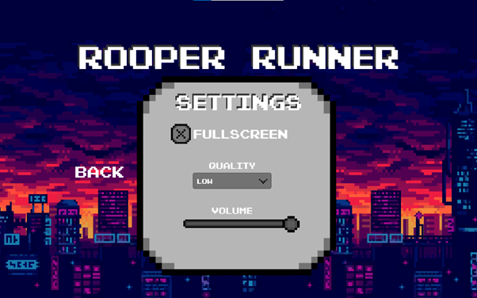
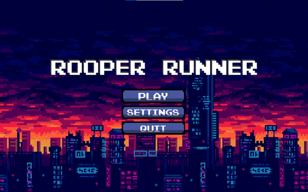
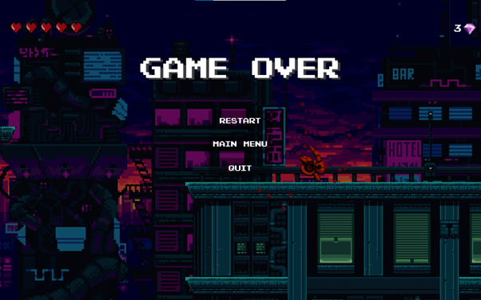
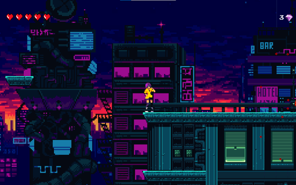

Screenshots vom Spiel




Rooper Runner ist ein 2D-Plattformspiel das in einer 8-Bit Graphik erstellt wurde. Ich habe es als
Abschlussarbeit in der Sekundarschule gemacht und bin auch sehr stolz darauf. Leider wurde das Spiel noch nicht
veröffentlicht und so ist auch noch nicht spielbar. Rooper Runner wurde mit dem Pixelpack "Warped City" ausgestattet. In dem Spiel geht es darum mit dem Character "Syenna" ans Ziel zu gelangen
und dabei alle Gegner zu besiegen.
Es erwarten euch epische Bossfights, spannende Abenteuer und viel Adrenalin. Bleibt dran und gespannt. Liebe Grüsse ihr Entwicklerteam von Rooper Runner.